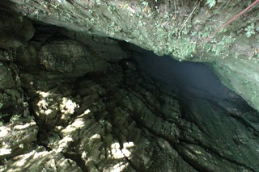
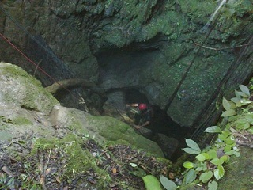
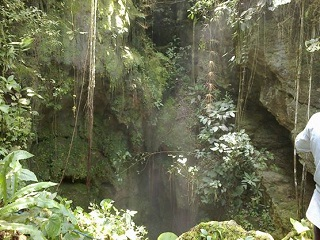
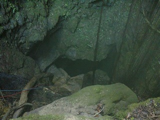
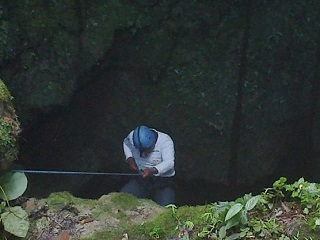

Según espeleólogos no puede considerarse gruta sino como cima, esta consta de dos entradas de nombre fresca 1 y 2. La primer entrada al lugar consta de 45 metros a rappel y la segunda son 185 metros en caída libre, por lo que se debe considerar equipo especial.
Dentro de la cima se puede observar más de 250 metros de playa, y caídas de agua, las cuales forman un afluente que atraviesa el lugar, la temperatura del agua del lugar es de 6° centígrados.
Las ultimas exploraciones se han hecho únicamente han recorrido aproximadamente 7 km sin encontrar salida alguna, por lo que ha desatado el interés de exploración de muchos.
Se encuentra en la comunidad soconusco, municipio de pueblo nuevo Solistahuacan.
Estando en el centro de pueblo nuevo, dirigirse al barrio san Lorenzo, y continuar el camino estatal aproximadamente 8 km, donde habrá un entronque continuar con dirección a la comunidad de arroyo grande, y seguir el camino hasta llegar a la comunidad de soconusco.
Ahí se puede preguntar por el camino que conduce a la gruta, donde toma aproximadamente 30 min a caballo, y una hora caminando.
En el lugar usted puede practicar actividades como:





posicione el mouse o de click sobre las imágenes
{kind=link}
{kind=link}
{kind=link}
{kind=link}
{kind=link}